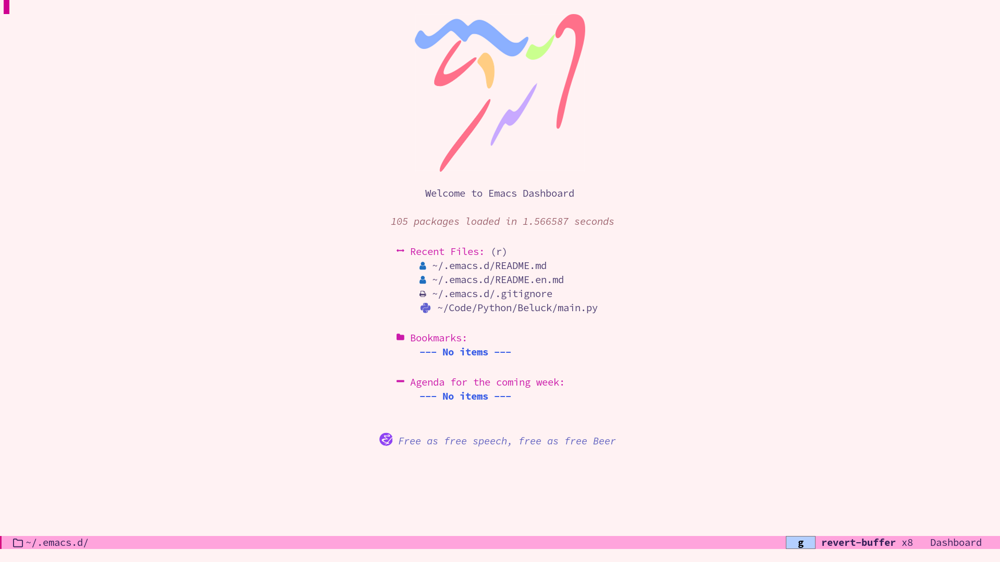

这是我的 Emacs 配置, 我根据 Remacs 的世界 中的《面向产品经理的 Emacs 教程》的配置进行了修改。我也是一个emacs新手，对于很多包也不会使用，但是我会持续更新配置。
要使用我的配置，请按照以下步骤进行安装：
克隆我的配置仓库到你的本地:
bash
git clone git@github.com:Elonisme/.emacs.d.git ~/.emacs.d
启动 Emacs, 打开emacs-config.org后，M-x。
bash
org-babel-tangle
重启emacs, 生成的文件会自动安装所需的包和依赖项。
我的配置主要用于编写代码和笔记，不是一个全能的配置。我尽量使得我的配置都是我真正需要用的，使之尽量美观，快速，以及简单。
使用 eglot 作为代码补全的工具，主要用于 Python 开发。
使用 org-roam 进行笔记管理和链接，以建立知识图谱。
使用 org-noter 在 Emacs 中阅读和注释 PDF 文档。
使用 dashboard 插件来提供一个个性化的启动界面，方便快速访问最近的文件和项目。
使用 rime 进行中文输入，我使用 rime-ice 配置。
请注意，我的配置使用 org-mode 来生成 el 文件。因此，你需要使用 org-babel-tangle 命令来生成配置文件。具体使用方法可以参考 Remacs 的世界 中的教程。
如果你是 Emacs 新手，我推荐你阅读《面向产品经理的 Emacs 教程》，我相信你会从中受益。
需要注意的是，我的配置中关于 use-package 的使用还不够熟练，如果遇到不能下载的包，请麻烦手动下载。
本配置遵循 GNU General Public License v3.0（GPLv3）许可证。你可以在 LICENSE 文件中查看许可证的完整文本。
如果你有任何问题或建议，请随时与我联系。
我的邮箱是 elonisme@163.com。
祝你在 Emacs 中编写代码和笔记愉快！